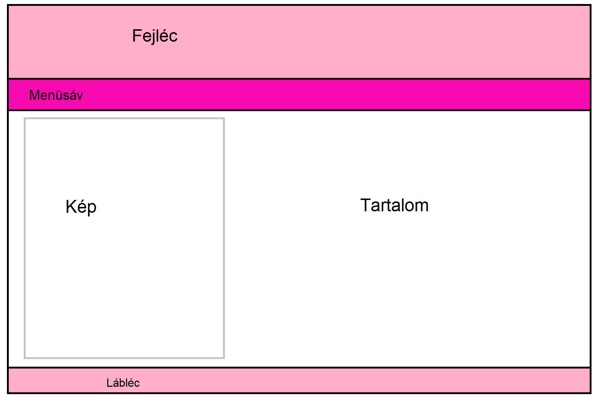
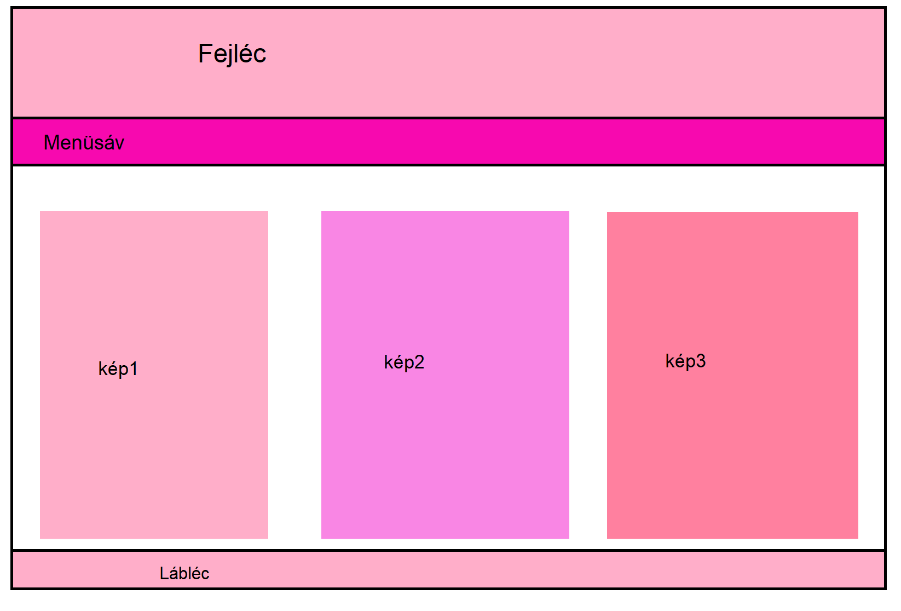
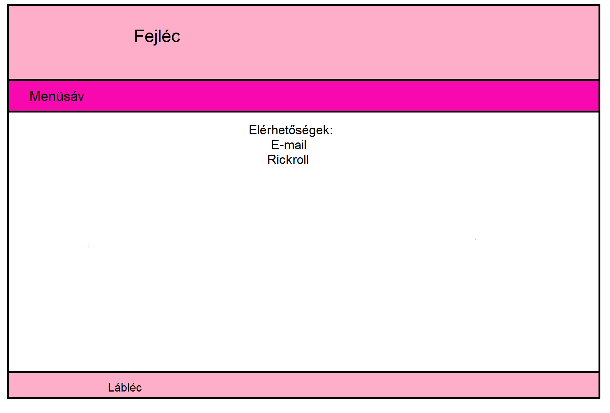

A weboldal terve:
Amikor elhatároztam magam az oldal megalkotása mellett, akkor tudtam, hogy szükségem lesz egy professzionális, vizuális ábrázolásra alkalmas szoftverre, amiben elkészíthetném az oldal vázlatát. Erre a célra a Paintet választottam.
Mivel férfi vagyok és Nánási Józsefhez járok gépészinformatikára, ezért kötelességemnek éreztem, hogy rózsaszín legyen az oldal fő színe. Mivel sajnos ízléses kivitelezést nem tudtam megoldani, ezért le kellett mondanom erről a célról.
Ez lett volna az eredeti kezdőkap:

Hogy milyen képeket rakjak ki az oldalra ott nehézségekbe ütköztem, mert nincs nagyon olyan hobbim amit kirakhatnék. Nagyon szeretem a zenét, a memeket és mostanában elkezdtem gyakorolni a főzést, de semmi bemutatnivaló gourmet különlegességet nem csináltam még.
A képeket tartalmazó oldal vázlata:

A kapcsolat oldal vázlata:

Egyéb gondolatok:
Nem vagyok az informatikusok gyöngye, hasznosnak tartom a tárgyat mindenképpen, de nem vagyok jó benne, így egy kicsit hosszúra nyúlt az oldal megírása.
Kivitelezés szempontjából sokat segített a Teams-en megadott példák és az azokban feltűntetett források.
A láblécet belevettem a vázlatba aztán rájöttem, hogy semmi lényegest nem tudnék odarakni, szóval az nem lett végül megcsinálva.